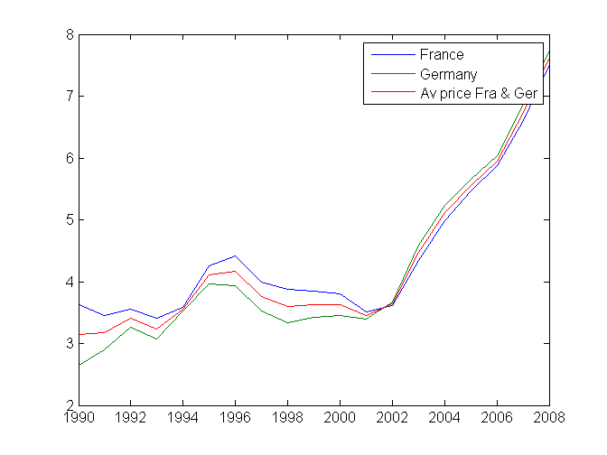
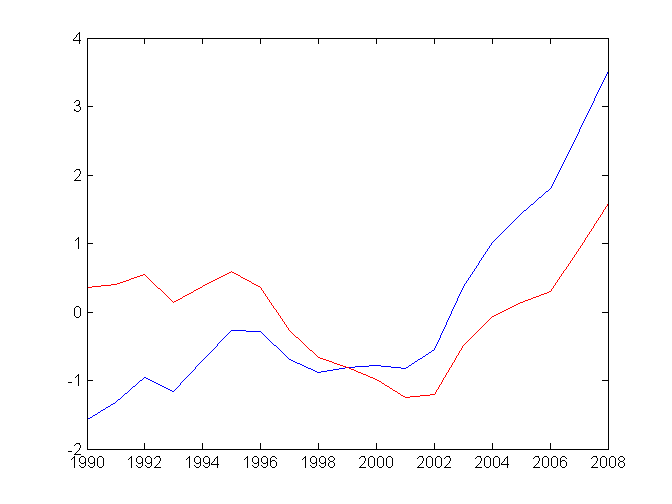

Contents
load the data
[data,textdata]=xlsread('../gasprices.xls');
Define colheaders
colheaders=textdata(end,:);
save into gasprices.mat
save gasprices
Define variables for prices in Germany and Mexico and a vector with the years
Germany=data(:,5);
Mexico=data(:,8);
Year=data(:,1);
Prices=data(:,2:end);
Compute simple statistics
mean(Germany)
ans =
4.2247
Average price/country
mean(Prices)
ans =
NaN 2.0868 4.4079 4.2247 4.6458 3.8205 1.7816 3.8358 4.3926 1.5921
Median
median(Germany)
ans =
3.5300
Max
max(Germany)
ans =
7.7500
Max and grab the the index
[MaxGer,Maxindex]=max(Germany)
MaxGer =
7.7500
Maxindex =
19
Min
min(Germany)
ans =
2.6500
Of course the same goes for min
[MinGer,Minindex]=min(Germany)
MinGer =
2.6500
Minindex =
1
Standard deviation
std(Germany)
ans =
1.4257
Or rms
std(Germany,1)
ans =
1.3877
Compute the average price in France and Germany
France=data(:,4);
FraGer=0.5*France+0.5*Germany;
plot(Year,France)
hold all
plot(Year,Germany)
plot(Year,FraGer)
legend('France','Germany','Av price Fra & Ger')

Sometimes, you want to remove the average value
Gervar=Germany-mean(Germany)
Gerdetrend=detrend(Germany,1);
figure
plot(Year,Gervar);
hold all
plot(Year,Gerdetrend,'r')
Gervar =
-1.5747
-1.3247
-0.9547
-1.1547
-0.7047
-0.2647
-0.2847
-0.6947
-0.8847
-0.8047
-0.7747
-0.8247
-0.5547
0.3653
1.0153
1.4353
1.8053
2.6553
3.5253
